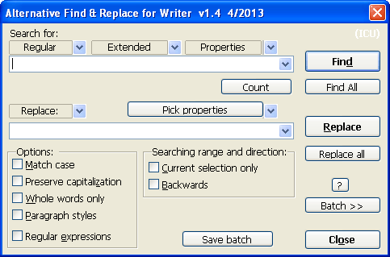
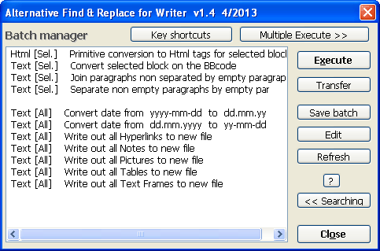
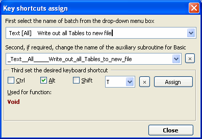
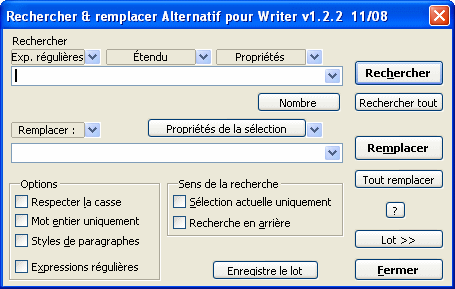
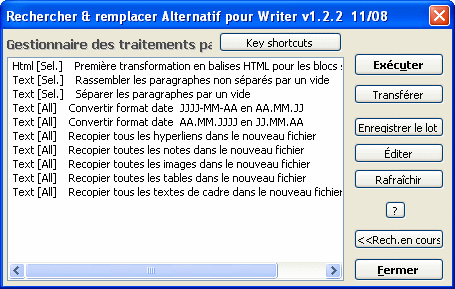
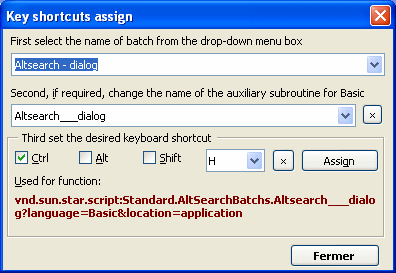

Macro AltSearch(Alternative
dialog find and replace for Writer) | What this extension offers | Searching | Replacing | Batch mode | Limitations | History of changes |
Author:
Tomas Bilek – ©
2007-2008 This version of help file edited by Anna Sharman 2008. This macro is distributed in the hope that it will be useful, but WITHOUT ANY WARRANTY. What this extension offers in comparison with the standard OOo Find dialog:
Here is a tip for setting up keyboard shortcuts if you use AltSearch frequently: 1. Open the dialog Tools - Customize... - Keyboard 2. In the Category field, navigate to OpenOffice.org Macros - User - AltSearch - AltSearch 3. In the Function field, select and assign the following (suggested) shortcuts using the Modify button:
 The List box menu (above the search string input field)This contains frequently used or complicated regular expressions or search parameters that can be used in the search field. After choosing an entry, the corresponding parameters are transferred to the input field (or to both the search and replace fields if this is specified). These may be inserted in several ways: before or after the cursor or replacing the text in the input box. At the same time, the "Regular expressions" checkbox is ticked.
SearchingList box 'Regular' This box contains some helpful regular expressions. They are described in the OOo help under the title List of Regular Expressions.
Limitation: The syntax using regular
expressions isn't fully compatible with OOo original. There are
problems especially with searching when using the wildcard *,
+, ? or {n,n} just after subexpressions determined by
parentheses ().
Other special wildcard parameters: \l - represents any alphabetic character; same as[:alpha:]{1,1}. \d - represents a decimal digit; same as [0-9]. \p - represents the paragraph termination sign, in contrast to the OOo standard search, $ also represents an empty paragraph. It is possible to use wildcards such as +, *, or {min,max} with $. \p{1,} - will find the next end of paragraph followed by an unlimited block of empty paragraphs. Same as \p*. \p{2,4} - will find the next end of paragraph followed by at least one and at most three empty paragraphs, i.e. a total of 2-4 paragraphs one after each other. Limitation: Slow when used separately. Sometimes there are problems when searching backwards. \xhhhh - will enable the input of a character's code as a hexadecimal number (hhhh) \#ddddd - will enable the input of a character's code as a decimal number (ddddd) If the next character isn't a digit, it is not necessary to keep of all 5 positions of ddddd. Otherwise it is necessary to fill in zeros from the left. \c - represents a manual column break. Limitation: Slow when used separately. \m - represents a manual page break. Limitation: Slow when used separately. If subexpression () is used, the parameter \m must be at the start of the search string, and it must not be alone: \m(...) but not (...)\m. \s - represents any space: space, non-breaking space, tab or manual line break. Same as [ \xA0\x9\xA]. \S - represents a non-breaking space (\x00A0 or \#160)
List box 'Extended' [::BigBlock::] - searches for a block of paragraphs (of unlimited length) delimited by some known text: start[::BigBlock::]end – first, start is searched for, and when it is found, end is searched for. If both are found, the whole block between them is selected. In the replace string you can use the parameters \b, & or \e for inserting the contents of start, found block of paragraphs, or end, respectively. Limitation: In the initial and final strings you cannot use the || sign for multiple searching and replacing; see below.
[::Grow n1,n2::] - the found block of text will be expanded by n1 characters to the left and n2 characters to the right: [::Grow -1,-1::]text - if the word text exists in the text it will be found, but only ex will be selected. Limitation: it is necessary to always use [::Grow... at the beginning of the search string and put the search expression after it. If n1 or n2 are negative values, then (depending on size and content of the search expression) the next search may cyclically find the same place.
text1||text2||text3||… - multiple search and replace operations in one step: Add the sign || to the end of the search and replace expressions to delimit the partial searches and replacements. Search
for: text1||text2||text3 Limitation: you cannot use the parameter [::BigBlock::] with ||, nor can you use subexpressions.
Searching for Objects: [::Note::] - searches text notes (yellow bubbles) according to their contents. [::Note::] - will find the next text note [::Note::]pozn. - will find any text note containing the substring pozn. Limitation: you can only search for substrings in the contents of notes - you cannot use full regular expressions.
[::Field::] - searches text fields according to their contents. [::Field::] - will find any normal text fields [::Field::]obsah will find text fields in the document that display the text obsah Limitation:
the same as for [::Note::]; see
above.
[::TextFrame::] - searches text frames according to their name. [::TextFrame::] - will find any text frame [::TextFrame::]rám1 - will find text frames containing the substring rám1 in their name Limitations: 1. When using the [ Find ] button, you will find the next text frame only if the frame is selected or if the cursor is inside the frame. If the cursor is a long way away in the text, the first text frame from the internal list of frames in the document is found. The option "Current selection only" currently doesn't work. 2. The practical usability of the [ Replace ] button is, as a consequence of point 1, very limited. 3. The order of searching matches (unfortunately, provisionally, I hope) the order in which the text frames have been inserted into the document and not the order within the pages of the document from the start to the end. 4. You can search only for a substring in the name of frame - you cannot use full regular expressions. [ Find all ] and [ Replace all ] are fully functional, including when used with the option "Current selection only".
[::Picture::] - searches pictures according to their name. [::Picture::] - will find any picture [::Picture::]obr1 - will find pictures containing the substring obr1 in their name Limitation: the same as for [::TextFrame::]; see above.
[::TextTable::] - searching tables according to their name [::TextTable::] - will find any table [::TextTable::]tab1 - will find any table containing substring tab1 in its name Limitation: the same as for [::TextFrame::]; see above.
[::Footnote::] - searches footnotes (FN) [::Footnote::] will find the anchor of any FN [::Footnote::]5 will find the anchor of a FN whose anchor contains the substring 5 [::Footnote::]\\text will find the anchor of FN whose text contains the substring text. If the button [ Find all ] is used, the text of all FNs that contain the substring text will be selected. Using [::Footnote::]\\ with the button [ Find all ], the text of all FNs will be selected (handy for assigning a paragraph style to all FNs at once) Limitation: It works well only from OOo version 2.3.
[::Endnote::] - searches endnotes Use of parameters and limitations are the same as for [::Footnote::]; see above.
[::ReferenceMark::] - searches for the target marker of cross-references [::ReferenceMark::] will find any text set as a reference marker [::ReferenceMark::]text will find any text set as a reference marker that contains substring text [::ReferenceMark::]\\ref1 will find any text set as a reference marker whose name contains the substring ref1 [::ReferenceMark::]\\\\ will find any text set as a reference marker whose text is empty
[::Reference::] - searches for text fields (cross-reference) by their markers [::Reference::] will find all text fields of the cross-reference type [::Reference::]above will find cross-references that contain the substring above [::Reference::]\\ref1 will find cross-references whose name contain the substring ref1 [::Reference::]\\\\ will find cross-references whose text is empty If Reference is chosen from the list box Extended and at the same time the cursor is positioned in text that is a Reference mark, then the corresponding source name will be added to the Search for box automatically, and it is possible to search it immediately.
List box 'Properties' This
enables searching according to properties (attributes), and also
according to the values of these properties. [:::HyperLinkURL::] - searches for text with the attribute HyperLinkURL [:::HyperLinkURL::] - will find all hyperlinks [:::HyperLinkURL::]link - will find the part of the hyperlink containing the text link. [:::HyperLinkURL=file:///c:/pokus.odt::] - will find a hyperlink in which the URL is the substring file:///c:/pokus.odt. [:::HyperLinkURL=file:///c:/pokus.odt::]link - will find part of a hyperlink in which the URL is the substring file:///c:/pokus.odt and in which the text contains the text link. A list of available text attributes (with the values they have in the current selection) can be loaded using the button [ Pick properties ]; this is displayed in the list box next to this button. A brief description of most of these properties can be found here.
Similar character attribute - this function loads any of the character attributes of the current selection that have been manually changed and searches for similarly formatted places. If e.g. the cursor is on text for which the name of the font has been manually changed, all places with a changed name of font will be found. The search box will contain e.g. [:::CharFontName::]. Same characters attribute - this function loads any of the character attributes of the current selection that have been manually changed and searches for identically formatted places. If e.g. the cursor is on text for which the name of the font has been manually changed, all places with a changed font name and the same font name will be searched for. The search box will contain e.g. [:::CharFontName=Arial::]. Limitation: The OOo search engine does not support all the existing paragraph and character properties. Not all combinations work as might be expected.
ReplacingList box 'Replace' & \0 - both these parameters mean the same thing: on replacement they represent the whole found text If the expression was searched for using [::BigBlock::], these parameters represent only the block of paragraphs between the start and end marks. If the object was searched for using [::Note::], [::Field::], [::TextFrame::], [::Picture::], or [::TextTable::], these parameters represent exactly these objects (which are inserted using the clipboard).
\b \e - If the expression was searched for using [::BigBlock::], these parameters represent content of the start and end marks. Limitation: these cannot be used together with subexpressions ().
\1 \2 \3 \4 \5 \6 \7 \8 \9 - content of subexpressions If the search expression was searched for using parentheses (), \1 represents the contents of the first pair of parentheses, \2 corresponds to the contents of the second pair (), etc., up to \9, which corresponds to contents of the 9th pair. Only 1st level parentheses are valid; nested levels inside them are ignored. Example: If you need to switch off the processing of subexpressions (e.g. to preserve compatibility with the regular expressions in standard OOo), you must put the whole search expression within an additional pair of parentheses. Then all other nesting levels of parentheses for replacement will be ignored. Limitation: Using subexpressions is relatively slow and not fully compatible with the original search function in OOo. There is an in incompatibility with search wildcards placed immediately after a subexpression, such as (opak)*, which is caused by the principle of sequential searching of sequential blocks of text; see here. In these cases the functions [ Count ] and [ Find all ] return the correct counts, but other functions (without switching to compatibility mode) will not find anything. In more complicated cases you will need to examine what happens,and experiment to get the best results.
\p - inserts an empty paragraph \t - inserts a tab (\x0009 \#9) \s - inserts a non-breaking space (\x00A0 \#160) \n - inserts a manual line break (\x000A \#10) \c - inserts a manual column break before the found paragraph(s) \m - inserts a manual page break before the found text \M - inserts a manual page break after the found paragraph(s) \r - removes manual column or page breaks in the found paragraph(s) \xhhhh - inserts a character using the hexadecimal character code (as hhhh) \#ddddd - inserts character using the decimal character code (as ddddd).
\h{addressURL} - changes the found text to a hyperlink with the URL addressURL \h{}, \h changes the found text to a hyperlink with a URL of an empty string - this has the effect of deleting a hyperlink's URL (the text of hyperlink of course stays unchanged). \H{substr} - replaces the substring in the hyperlink's URL This should be used at the same time as searching using [:::HyperLinkURL=::]. If the expression was searched for e.g. using[:::HyperLinkURL=substr::], only hyperlinks will be found whose URLs includes the substring substr. Using \H{repl} in the replace expression will find the text substr in the URL and replace it with repl. \u - inserts in the replacing expression the URL address of the found text (if a hyperlink is found) \P{Text} - sets up Paragraph style Text in the found paragraph(s) The style is applied to the paragraph containing the text of the replaced expression. To set the style to "Default", use \P or \P{}. If this parameter is used a number of times with inserted paragraph(s), the style is changed with every new parameter, and is valid as far as the end of the paragraph. Example: If the expression is replaced using block1\P{Subtitle}\p block2\P{Heading 1} so block1 will be inserted and assigned the style Subtitle, and after it a new paragraph with text block2 will be inserted and assigned the style Heading 1. \C{Quotation} - sets up the Character style Quotation in the found text The style is applied on the whole text of the replaced expression. To set to the "Default" style use \C or \C{}. If this parameter is used a number of times, the character style is changed with every new parameter, and the last is valid as far as the end of replacing expression. Example: If the expression was replaced using block1\C{Quotation}block2\C{Example}, block1 will be inserted with the character style Quotation, and after it block2 will be inserted and assigned the character style Example.
\N{List 3} - sets up List style List 3 in the found paragraph(s) Applies analogous usage rules to those for the parameter \P{}. List style can be removed with \N or \N{}.
\D - sets up the default formatting for the found text, just like using Ctrl+Shift+Space Applies analogous usage rules to those for the parameter \C{}. \d - resets text attributes to default only in the place of use. Contrary to \D it has no effect on the previously inserted text. \F{New footnote} - inserts a new footnote that contains the text New footnote in the place of replacement Inside the curly brace it is possible to use any of following parameters: \i, \I, &, or \1 \E{New endnote} - inserts a new endnote in the place of replacement ; analogous to \F \B{ref1|text} - inserts the text text with the marker ref1 for a cross-reference Inside the curly brace it is possible to use any of following parameters: \i, \I, &, or \1 \L{0,0,ref1} - inserts a cross-reference (field) with the parameters 0,0 and reference marker ref1 Meaning of numeral parameters: first number - type of reference: 0 - page number in Arabic numerals, 1 - chapter number, 2 - the reference text , 3 - above/below , 4 - page number using the numbering type defined in the page style, 5 - category and number of a caption, 6 - caption text, 7 - number of a sequence field (caption) second number - type of the source of a reference field; the source is : 0 - a reference mark, 1 - a number sequence field, 2 - a bookmark, 3 - a footnote, 4 - an endnote
\o - inserts the text content of the found object If the expression was searched for using [::Note::], [::Footnote::], [::Endnote::], [::TextFrame::], [::Picture::], or [::TextTable::], the text inside this object will be inserted. Tables come out with tabs between columns and paragraphs between rows. Limitation: The maximum size of the whole resulting text after converting a table is limited to 65 kB. If the expression was searched for using [::Field::], [::Reference::], or [::ReferenceMark::] , the displayed text of the anchor or field will be inserted. \O - inserts the name of the found object If the expression was searched for using: [::TextFrame::], [::Picture::], or [::TextTable::], the name of this object will be inserted. [::Note::] or [::Field::], the type of the text field will be inserted [::Reference::] or [::ReferenceMark::], the name of the reference mark will be inserted [::Footnote::] or [::Endnote::], the displayed text of the anchor will be inserted \i - inserts the occurrence number of the found object or text in a count of the occurrences in the text - this works only if [ Replace all ] is used \I - inserts the number of the page on which the search expression is found If redirection of the replace expression to another file (\R) is used (see below), the number of the page containing the starting position of the found text is inserted in the other file. Limitation: this does not work correctly in footnotes, headers and footers. \v - inserts the contents of the clipboard \V - inserts contents of the clipboard as unformatted text \f - preserves format If & or \0 is used in the replace expression, replacement will be realized using the clipboard. If the found text contains text fields, notes, references etc, they will be preserved in their original state. \R - redirects the replace expression to another text file This option causes the replace expression to be inserted into new .odt file instead of replacing the found text. The original file will stay as it is, without changes. To enter the name of the output file, use the format \R{filename}. The name must have the accurate OOo window format, including the text " - OpenOffice.org Writer". New records from this redirection are always added to the end of the file. Example: If the search expression was searched for using [:::HyperLinkURL::] and the replace expression is Link \i, page \I: & (URL: \u)\p\R, when you click the [ Replace all ] button all the hyperlinks found in original file will be listed in a new file in the form Link 1, page 1: textOfHyperlink (URL: URLaddress) in separate paragraphs.
Button and List box 'Pick properties' Using the [ Pick properties ] button you can update the list of (some) properties and their values for the currently selected object. Then you can browse the list and choose one from the list box next to the button. \A{properties=value} - sets in the replace expression the value of the specified property. Uses rules analogous to those for the parameter \C{}.
Batch mode using: [ Batch >> ]Batch mode enables saving and loading of preset search and replace parameters. It is possible to save several search and replace operations in sequence to a single sequence and then quickly load and execute the whole set. You can set all parameters using the [ Save batch ] button. In the dialog that is then shown, you will be offered the name used for the last batch, which can be renamed. If you enter an name that already exists, you can choose whether the old content will be overwritten or whether it will be preserved and new content added onto the end. At the same time, the command "ReplaceAll" will automatically be saved, with which the batch will be subsequently executed. This command can later be changed by manually editing the batch rule file. The button [ Batch >> ] switches to the dialog 'Batch manager', where you can run and edit batches. To return back to the search dialog, use the [ << Searching ] button. All batch parameters are saved to the text file AltSearchScript.txt into the user's directory …/OpenOffice.org2/user/config/, and you can open and edit it using the [ Edit ] button in the Batch manager dialog. For editing the text, the program notepad is used by default, but you can set it to use any other text editor by editing the file AltSearchEditor.ini in the same directory. After manual changing and saving the file using the batch manager you can then refresh the list of batch names using the [ Refresh ] button. The syntax used in the file AltSearchScript.txt is described at the beginning of the same file, using UTF-8 encoding (from v1.1.1). When you double-click on an item in the list, or click the [ Execute ] button, the chosen sequence will be loaded and the search and replace operations will be executed. When using batches on selections I advise leaving 1-2 empty paragraphs at the beginning and the end of the selection. The button [ Transfer ] is used for transferring the parameters for searching, replacing and setting to the search dialog without executing them. If the batch contains a sequence of several searches and replacements, only the last part of the sequence will be transferred. [v1.2] The button
[ Key shortcut ] opens a
dialog that allows you to assign a keyboard shortcut to an
existing batch. To use this: In order for the shortcut to function, at the time of assignment an auxiliary procedure is created in the Basic module Standard.AltSearchBatchs with a name that is adjusted according to Basic syntax. This name is displayed in the second drop-down menu box of the dialog. When this auxiliary procedure is run, the AltSearch dialog will be opened and immediately the specified batch will be executed. Correct functioning depends on the compliance of the batch name listed inside the procedure and the name of existing batch. If you change the name of batch to which a shortcut key was previously assigned, you will need to re-assign a key shortcut (the old auxiliary procedure to the original name can be deleted by selecting it in the second drop-down box and using the side button [ x ]). Any keyboard shortcut that is used in OOo writer can be released using the lower button [ x ]. So be careful not to inadvertently remove an important shortcut.
Limitations:If limitations are known, they are mostly mentioned near of the description of individual parameters. Generally applicable limitations:
History of changes:Version 1.2.1 7/08 [v1.2] News:
Version 1.2 7/08 [v1.2] News:
Fixed bugs:
Version 1.1.2 4/08 News:
Version 1.1.1 3/08 News:
Fixed bugs:
Version 1.1 2/08 News:
Fixed bugs:
Version 1.0 12/07 - First Public release
|
Macro AltSearch(Autre
boite de dialogue chercher & remplacer pour Writer) | Qu'offre cette extension | Rechercher | Remplacer | Traitement par lot | Limitation | Historique |
Auteur :
Tomas Bilek – ©
2007-2008 Cette macro est distribuée dans l'espoir d'être utile, mais SANS AUCUNE GARANTIE. Qu'offre cette extension par rapport à la boîte de dialogue standard de OOo :
Raccourcis clavier pour un usage fréquent : 1. Aller à Outils - Personnaliser... - Clavier 2.Dans le champ Catégorie trouvé en cliquant sur Macros OpenOffice.org - User - AltSearch - Altsearch 3. Puis dans le champ Fonction choisir la commande Modifier [et] aller dans raccourcis clavier [et], descendre sur le raccourcis correspondant et cliquer sur le bouton Modifier :
 Fenêtre (au-dessus des champs chercher et remplacer pour mettre l'expression)contient
expressions ou des paramètres fréquemment utilisés
réguliers ou compliqués. Après avoir choisi les paramètres
correspondants ils sont transférés au champ d'entrée (ou des deux
champs). Ceux-ci pourraient être insérés de plusieurs
façons : au début , à la fin, Chercher :Liste déroulante Exp. régulières contient quelques expressions régulières utiles. Leur description est disponible dans l'aide d'OOo dans la Liste Expressions Régulières.
Limitation : La syntaxe utilisée
pour les expressions régulières n'est pas entièrement
compatible avec celle d' OOo. Les problèmes sont surtout
avec rechercher, en utilisant un joker *
+ ? {n, n} près
d'une sous chaîne entre parenthèses ().
Autres paramètres spéciaux "joker" : \l - représente le caractère alphabétique ; comme [:alpha:]{1,1}. \d - représente le chiffre décimal ; comme [0-9]. \p - représente le signe de fin de paragraphe, En contradiction au standard d'OOo $, peut représenter aussi un paragraphe vide. Il est possible d'utiliser un joker +, *, {min, max}. \p{1,} - Trouvera la plus proche fin de paragraphe suivi par le bloc illimité de paragraphes vides. Même comme \p*. \p{2,4} - trouvera la plus proche fin de paragraphe suivi au minimum un, maximum trois paragraphes vides, sur l'ensemble au minimum 2 maximum 4 paragraphes l'un après l'autre. Limitation : lent en utilisation séparée. Quelquefois des problèmes lors de recherche en arrière. \xhhhh - Permettra d'entrer un code de caractère en hexadécimal (comme hhhh) \#ddddd - Permettra d'entrer un code de caractère en décimal (comme ddddd) Si le caractère suivant n'est pas un chiffre , il n'est pas nécessaire de garder les 5 positions de ddddd. Autrement il faut compléter par des zéros en partant de la gauche. \c - cherche un saut de colonne manuel. Limitation : lent en utilisation séparée. \m - cherche un saut de page manuel. Limitation : lent en utilisation séparée. Si une sous chaîne () est utilisée, donc le paramètre \m doit être au début de chaîne cherchée, ou ne peut pas être seul : \m(...) mais non (...)\m. \s - représente n'importe quel espace : l'espace, l'espace insécable, une tabulation, un saut de ligne manuel. Comme [ xA0\x9\xA]. \S - représente le caractère espace insécable(\x00A0 ou \#160)
Liste déroulante Étendue [::BigBlock::] - cherche un ensemble de paragraphes (illimité long), délimité par du texte connu start [::BigBlock::] end - En premier il cherche le début puis après avoir trouvé le résultat, recherche la fin.. Si les deux sont trouvés, le bloc entier est marqué. Pour remplacer une chaîne il est possible d'utiliser les paramètres \b, &, \e pour insérer les contenus de début, de bloc de paragraphes trouvés, de fin. Limitation : à l'intérieur de la marque initiale et finale il est impossible d'utiliser le signe || pour un Chercher-Remplacer multiple, voir ci-dessous.
[::Grow n1, n2::] - le bloc de texte trouvé sera augmenté de n1 caractère sur la gauche et n2 sur la droite [::Grow -1,-1::]text - si le mot existe dans le texte texte il sera trouvé, mais sera seulement marqué ex. Limitation : [::Growe... il est nécessaire de toujours l'utiliser au début de la chaîne cherchée et après l'expression cherchée. Si les indices placés devenaient des valeurs négatives, alors il pourrait arriver (fonction de la taille et du contenu de l'expression cherchée) qu'à la prochaine recherche on bouclera au même endroit.
text1|| Text2||text3||… - rechercher-remplacer multiple en une fois le signe d'expression || ajouter à la fin d'un Rechercher et Remplacer , délimitera un Rechercher et Remplacer partiel. Ex
: Limitation : il est impossible d'utiliser le paramètre [::BigBlock::], il lui est impossible d'utiliser des sous-chaînes ici en même temps.
Rechercher des Objets [::Note::] - Cherche les notes de texte (notes jaunes) selon leur contenu [::Note::] - trouvera n'importe quelle note de texte [::Note::]pozn. - trouvera les textes de note contenant la sous chaîne pozn. Limitation : chercher seulement la sous chaîne dans le contenu de note - il est impossible d'utiliser des expressions régulières entières. [::Field::] - Cherche les champs correspondant à leur contenu [::Field::] - trouvera tous les textes [::Field::]obsah trouvera les champs en affichant le champ Obsah dans le texte du document Limitations :
sont les mêmes comme pour [::Note::].
Voir ci-dessus.
[::TextFrame::] - Cherche les cadres de texte selon leur nom [::TextFrame::] -Trouvera n'importe quel cadre de texte [::TextFrame::]ram1 - trouvera le cadre de texte contenant la sous chaîne ram1 dans le nom Limitations : 1. le bouton [ Trouver ] trouvera le prochain cadre de texte seulement si le cadre de texte est choisi ou le curseur dans le cadre. Si c'est loin dans le texte, ce sera toujours le premier cadre de texte de la liste interne de cadres. Ne fonctionne pas actuellement avec l'option « Sélection actuelle uniquement ». 2. Utilisation pratique le bouton [Remplacer ] a la même limite qu'en 1. dur limité. 3. L'ordre des recherches correspond (malheureusement, provisoirement, j'espère) à l'ordre d'insertion des cadres de texte dans le document et non à l'ordre par rapport au début et à la fin du document en fonction des pages. 4. Rechercher seulement la sous chaîne dans le nom du cadre - il est impossible d'utiliser des expressions régulières pleines. L'utilisation [Rechercher tout] et [Remplacer tout] aurait du être entièrement fonctionnelle avec l'option « Sélection Actuelle seulement ».
[::Picture::] - Chercher des images selon leur nom [::Picture::] - trouvera n'importe quelle image [::Picture::]Pari - trouvera les images contenant la sous chaîne Pari dans le nom Limitations : sont les mêmes que pour [::TextFrame::]. Voir ci-dessus. [::TextTable::] - Chercher des tables selon leur nom [::TextTable::] - trouvera n'importe quelle table [::TextTable::]tabl - trouvera la table contenant la sous chaîne tabl dans nom Limitation : sont les mêmes que pour [::TextFrame::]. Voir au-dessus. [::Footnote::] - chercher des notes de bas de page (NBP) [::Footnote::] trouvera n'importe quelle ancre de NBP [::Footnote::] 5 trouvera une ancre de NBP dont l'ancre contient la sous chaîne 5 [::Footnote ::]\\text trouvera une ancre de NBP dont le texte contient la sous chaîne texte. Si le bouton [Rechercher tout] est utilisé, les textes de tous les NBP qui contiennent la sous chaine texte seront sélectionnés. [::Footnote::]\\ Avec le bouton [Rechercher tout] le texte de tout NBP(pratique pour assigner de multiples fois un style de paragraphe à toutes les NBP) sera choisi. Limitation : il fonctionne bien à partir de la version d'OOo 2.3
[::Endnote::] - Chercher des notes de fin L'utilisation des paramètres et les limitations sont les mêmes que pour [::Footnote::]. Voir ci-dessus.
[::ReferenceMark::] - chercher la cible des marque de renvois [::ReferenceMark::] trouvera n'importe quel texte défini comme marque de référence. [::ReferenceMark::]text trouvera text défini comme marque de référence, qui contient la sous chaîne texte. [::ReferenceMark::]\\refl trouvera le texte défini comme marque de référence, dont le nom contient la sous chaîne refl [::ReferenceMark::]\\\\ trouvera le texte défini comme marque de référence dont le texte est vide
[::Reference::] - Recherche d'un champ de texte (le renvoi) référencé à une marque. [::Reference::] trouvera tout type de champs de texte ou de renvoi [::Reference : :]above trouvera un renvoi qui contient la sous chaîne above [::Reference::]\\ref1 trouvera le renvoie dont le nom contient la sous chaîne ref1 [::Reference::]\\\\ trouvera le renvoi dont le texte est vide Si Référence est choisi à partir de la liste déroulante Etendue et qu'en même temps le curseur est dans un texte qui est une marque de référence, alors le nom de la source correspondante sera ajoutée à la boite Rechercher automatiquement et il est alors possible de procéder à la recherche immédiatement..
Liste déroulante Propriétés de la sélection Elles permettent
la recherche selon les propriétés (les attributs) et
éventuellement aussi leurs valeurs. [:::HyperLinkURL::] - Cherche la partie de texte avec un attribut HyperLinkURL [:::HyperLinkURL::] - trouvera tout hyperlien [:::HyperLinkURL::]link - trouvera la partie de l'hyperlien correspondant au texte link. [:::HyperLinkURL=file:///c:/pokus.odt::] - trouvera l'hyperlien dans l' URL où se trouve la sous chaîne file:///c:/pokus.odt. [:::HyperLinkURL=file:///c:/pokus.odt::]link trouvera l'hyperlien dans l' URL où se trouve la sous chaîne file:///c:/pokus.odt et contenant le text link. La liste des attributs de texte disponibles avec leurs valeurs courantes (selon la sélection actuelle) il est possible de la charger à l'aide du bouton [Propriété de la sélection] et elle s'affichera dans une liste latérale. Une courte description peut être trouvée ici.
L'attribut de caractère similaire - cette fonction charge n'importe quels attributs du caractère modifiés manuellement (selon la sélection actuelle) pour chercher des zones formattées de façon similaires. Si par exemple le curseur est sur un nom dont le jeu de caractères a été changé manuellement , tous les endroits avec le nom dont le jeu de caractères a été changé seront cherchés - [:::CharFontName::]. L'attribut mêmes caractères - cette fonction charge n'importe quels attributs du caractère manuellement changés (selon la sélection actuelle) pour chercher les zones formattées de la même façon. Si par exemple le curseur est sur un nom dont le jeu de caractères a été changé manuellement , tous les endroits avec le nom dont le jeu de caractères a été changé seront cherchés [:::CharFontName=Arial::]. Limitation : Le moteur de recherche d'OOo ne convient pas pour toutes les propriétés de paragraphes et de caractère existants. Leur combinaison ne fonctionne pas comme attendu et correctement.
Remplacer :La liste déroulante Remplacer & \0 - ces deux paramètres signifient la même chose - au remplacement ils représentent tout le texte trouvé. Si l'expression a été recherchée à l'aide de [::BigBlock::] alors ces paramètres représentent seulement un bloc de paragraphes entre les marques de début et de fin. Si l'objet a été recherché à l'aide de [::Note::], [::Field::], [::TextFrame::], [::Picture::], [::TextTable::] alors ces paramètres représentent directement ces objets (mis dans le presse-papiers).
\b \e - Si l'expression a été recherchée à l'aide de [::BigBlock::] alors ces paramètres représentent le contenu des marques de début et fin. La limitation : il est impossible de l'utiliser dans les sous expressions (). \1 \2 \3 \4 \5 \6 \7 \8 \9 - contenu des sous expressions Si l'expression a été recherchée à l'aide de parenthèses (), alors \1 représente le contenu correspondant à la première paire de parenthèses, de même \2 correspond à la deuxième paire () etc., le \9 maximum correspond à la neuvième paire. Seul le premier niveau de parenthèses est valide, les niveaux suivants sont ignorés. Exemple :
Si il est nécessaire de désactiver le traitement de la sous-expression (par exemple pour raison de compatibilité avec les expressions régulières dans le standard OOo) il est nécessaire d'insérer l'expression de recherche entière avec une paire supplémentaire de parenthèses (). Sinon tous les autres niveaux de parenthèses imbriquées pour un remplacement seront ignorés. Limitation : l'utilisation de sous chaînes est relativement lente et pas entièrement compatibile avec l'outil rechercher d'origine de OOo. L'incompatibilité avec le joker de recherche tout de suite derrière une sous expression (opak)* est due au principe de recherche séquentielle de blocs consécutifs de textes, voir ici. Dans ces cas les fonctions [Nombre] et [Rechercher tout] retournent le vrai nombre pendant que l'autre sans changer le mode de compatibilité ne trouvera rien. Dans les cas plus compliqués il sera nécessaire d'examiner le comportement, et de vérifier expérimentalement.
\p - insère un paragraphe vide \t - insère une tabulation (\x0009 \#9) \s – insère un espace insécables (\x00A0 \#160) \n – insère un retour à la ligne manuel (\x000A \#10) \c - place un saut de colonne manuel « avant » le ou les paragraphes trouvés \m – place un saut de page manuel « avant » le ou les paragraphes trouvés \M - place un saut de page manuel « après » le ou les paragraphes trouvés \r – désactive les sauts de colonne ou de page manuel dans le(s) paragraphe(s) trouvés (s) \xhhhh - insère un caractère par son code en nombre hexadécimal (comme hhhh) \#ddddd - insère un caractère par son code en nombre décimal (comme ddddd). \h{addressURL} – place le texte trouvé comme hyperlien vers lequel URL met addressURL \h{}, \h place le texte trouvé comme hyperlien vers lequel URL met une chaîne vide - efface l'hyperlien de l'URL (le texte de l'hyperlien lui reste inchangé). \H{substr} - remplace la sous chaîne dans l'URL de l'hyperlien s'utilise en même temps avec Rechercher par [:::HyperLinkURL=::]. Si
l'expression a été recherchée par exemple à l'aide
de \u - insère dans l'expression de remplacement l'adresse de l'URL du texte trouvé (si l'hyperlien est trouvé) \P{Text} – Définit le style de Paragraphe (Texte) dans le(s) paragraphe(s) trouvé(s) Le style est appliqué au paragraphe dans lequel est le texte de l'expression remplacée. Pour paramétrer le style par « Standard » il est possible d'utiliser \P ou \P{}. Si ce paramètre est utilisé plusieurs fois avec le(s) paragraphe(s) inséré(s) , le style est donc changé avec chaque nouveau paramètre, et reste valide jusqu'à la fin du paragraphe. Exemple : Si l'expression a été remplacée à l'aide de block1\P{Subtitle}\p block2\P{Heading 1} alors , dans le document, sera inséré block1 avec le style Subtitle et après lui le nouveau paragraphe avec le texte block2 et avec le style Heading1. \C{Quotation} – définit le style de caractère (quotation) dans de texte trouvé Le
style est appliqué sur le texte entier de l'expression remplacée.
Pour paramétrer le style « Standard » il
est possible d'utiliser \C ou
\C{}. Si ce paramètre est utilisé
plusieurs fois, alors le style de caractère sera changé
avec chaque nouveau paramètre, et le dernier est valide
jusqu'à la fin de l'expression à remplacer .
\N{List 3} – définit le style de Liste (List 3) dans le(s) paragraphe(s) trouvé(s) Applique des règles d'usage analogues au paramètre \P{}. Le style de liste peut être supprimé en utilisant \N ou \N{}. \D – redéfinit le format par défaut pour tout le texte trouvé comme Ctrl +Maj+Espace Applique des règles d'usage analogues au paramètre. \C{} \d - redéfinit les attributs de texte par défaut seulement dans les zones où il est utilisé. Contrairement à \D cela n'a pas d'effet sur le texte précédemment inséré \F{New footnote } - insère la nouvelle note de bas de page qui contient New Footnote au lieu de remplacer . À l'intérieur des accolades il 'est possible d'utiliser n'importe quels paramètres comme \i, \I, &, ou \1 \E{New endnote} - insère la nouvelle note de fin au lieu de remplacer, analogue à \F \B{ref1|I
text} – insère le texte text
qui représente la marque [borne] de nom ref1
pour le renvoi \L{0,0,ref1} – Insère un renvoi (champ) avec 0,0 paramètres et le nom de la marque de référence ref1 Signification des paramètres numériques premier nombre - type de référence : 0 - les nombres arabes de la page, 1 - le nombre du chapitre, 2 - le texte de référence, 3 - au-dessus / au dessous, 4 - le nombre de page utilisant le type de numérotation défini dans le style de page, 5 - la catégorie et le nombre d'une légende, 6 - le texte de légende, 7 - le nombre d'un champ de séquence (la légende) le deuxième nombre - le type de la source d'un champ de référence ; la source est : 0 - une marque de référence, 1 – un nombre d'un champ de séquence de, 2 - un signet, 3 - une note de bas de page, 4 - une note de fin \o – insère le contenu du texte d'objet trouvé Si l'expression a été recherchée à l'aide de [::Note::], [::Footnote::], [::Endnote::], [::TextFrame::], [::Picture::], [::TextTable::] alors le texte qui contient cet objet est inséré . Le tableau est convertie à l'aide de tabulations entre les colonnes et de paragraphes entre les lignes. Limitation : la taille maximum de conversion de tableaux est limitée à 65 kB résultant de la totalité du texte. Si l'expression a été recherchée à l'aide de [::Field::], [::Reference::], [::ReferenceMark::] alors le texte de l'ancre ou du champ affiché sera inséré. \O - insère le nom de l'objet trouvé Si l'expression a été recherchée à l'aide de [::TextFrame::], [::Picture::], [::TextTable::] - Le nom de l'objet sera inséré. [::Note::], [::Field::] - la spécification des types de champs sera insérée [::Reference::], [::ReferenceMark::]- le nom de marque de référence sera inséré [::Footnote::], [::Endnote::] - le texte affiché de l'ancre sera inséré
\I - insère le nombre de page, où l'expression recherchée est trouvée Si la redirection de l'expression remplacée (\R) est utilisé, alors sera inséré le nombre de page à la position de départ du texte trouvé. Limitation : ne s'exécute pas correctement dans les notes de bas de page, l'en-tête et le pied de page. \v - insère le contenu du presse-papiers \V- insère le contenu du presse-papiers comme texte non structuré \f - conserve le format Si dans l'expression remplacée est utilisé & ou \0 , Remplacer sera supérieur au presse-papiers. Si le texte trouvé contient des champs de texte, des notes, des références etc, ces objets seront conservés dans l'état original. \R - Redirige l'expression de remplacement vers un fichier texte Cette option provoque la sortie de l'expression remplacée vers un nouveau fichier.ODT au lieu de faire le remplacement à l'endroit trouvé. Le fichier original ne doit pas être modifié. Il est possible de saisir le nom du cadre du fichier à l'aide de R{filename}. Le nom doit avoir précisément le format comme la fenêtre d'OOo l'inclut «- OpenOffice.org Writer». Les enregistrements sont toujours ajoutés à la fin du fichier. Exemple : Si l'expression de recherche a été recherchée à l'aide de [:::HyperLinkURL::] et l'expression remplacée était Link \i, page \I: & (URL: \u)\p\R, alors après avoir utilisé le bouton [Remplacer tout] il sera imprimé dans le nouveau dossier tous les hyperliens trouvés dans le dossier original, dans la forme suivante : Link 1, page 1: textOfHyperlink (URL: URLaddress) dans des paragraphes séparés.
La boîte de bouton et Liste Propriétés de la sélection À l'aide du bouton [ Propriétés de la sélection ], il est possible de mettre à jour la liste des propriétés et de leurs valeurs des objets sélectionnés. Il est possible de naviguer et de sélectionner dans la zone de liste située à côté. \ A{properties=value} - Dans l'expression remplacée, paramètre la valeur de la propriété spécifiée. Applique des règles d'usage analogues au paramètre \C{}.
L'utilisation du mode de Traitement par Lot :[Lot >>]Le mode de traitement par lot permet la sauvegarde et le chargement des paramètres préfixés de recherche et de remplacement. Il est possible de sauvegarder plusieurs recherche et remplacement en une seule séquence et cela rapidement après chargement et exécution. La définition de tous paramètres peut être sauvegardée avec l'aide du bouton [Enregistrer le lot]. Dans la fenêtre, qui s'affiche, il est possible de renommer le dernier nom utilisé de Traitement par lot. Si vous saisissez un nom déjà existant, vous pourrez choisir, si l'ancien nom sera réécrit, ou sera conservé et le nouveau nom sera ajouté à la fin. En même temps, la commande 'Tout remplacer' sera automatiquement sauvegardée et elle sera subséquemment exécutée par lot. Cette commande pourra être modifiée ultiérieurement par l'édition manuelle du fichier de règle des lots.[ Bouton [lot>>] basculera vers la fenêtre Gestionnaire des traitements par lot où il est possible de Exécuter et Éditer des traitements par lot. Pour revenir à Rechercher & remplacer Alternatif il suffit de cliquer sur le bouton[<<Rech. en cours]. Tous les paramètres de traitement par lot sont sauvés vers le fichier texte AltSearchScript txt dans le dossier de l'utilisateur …/OpenOffice.org2/user/config/, qu'il est possible avec l'aide du bouton [Editer] dans la fenêtre Gestionnaire de traitement par lot, d'ouvrir et d'éditer. Le bloc-notes d'éditeur de texte (Notepad) est paramétré d'origine, il est cependant possible de mettre tout autre éditeur de texte, en éditant le fichier AltSearchEditor.ini dans le même dossier. Après les changements manuels et la sauvegarde du lot il est possible de rafraichir la liste de nom de lot avec l'aide du bouton [Rafraîchir]. La syntaxe à utiliser dans le fichier AltSearchScript.txt est décrit à son tout début, codé en UTF-8 (à partir de v1.1.1). Après le double clique sur un article de la liste, ou par le bouton [ Exécuter], la séquence choisie sera chargée, et les recherches et remplacements seront exécutés. En utilisant des traitements par lot sur une partie choisie je conseille de laisser au début et après la fin de la sélection 1 - 2 paragraphes vides.  [v1.2]
Limitations :Si des limitations sont connues, elles sont alors notées dans la description des paramètres individuels. S'applique généralement.
Mises à jour :
La version 1.1. 2 4/08 Nouveautés :
Version 1.1.1 3/08 Nouveautés :
Version 1.1 2/08 Nouveautés :
Erreurs corrigées :
La version 1. 0 12/07 – la première version Publique |